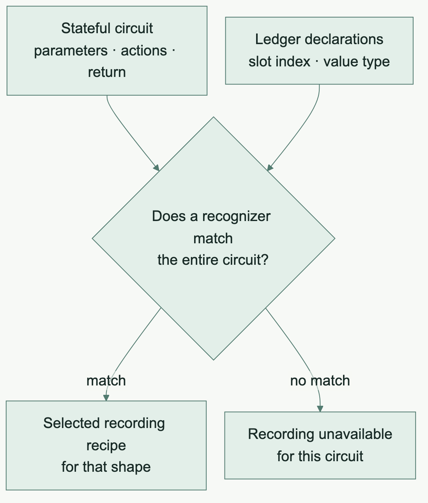
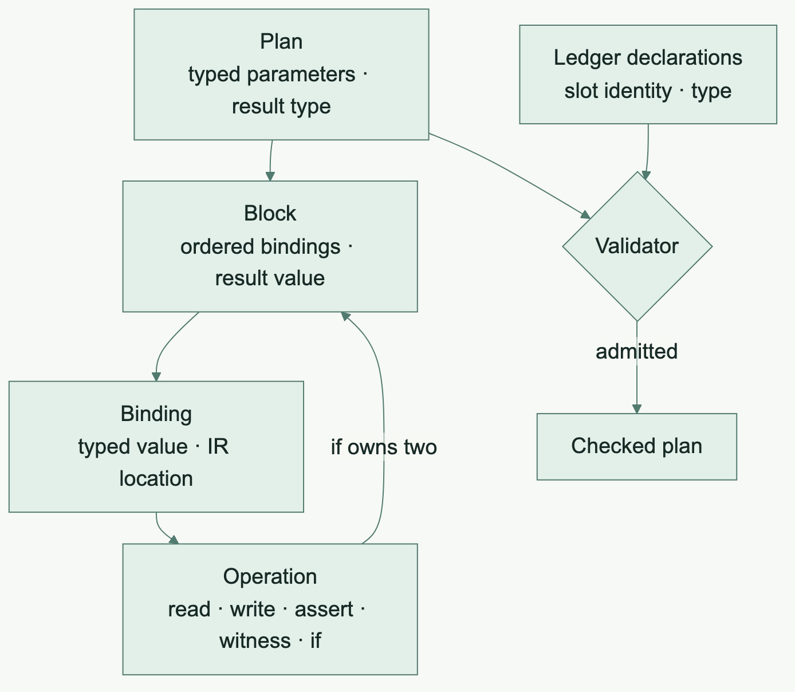
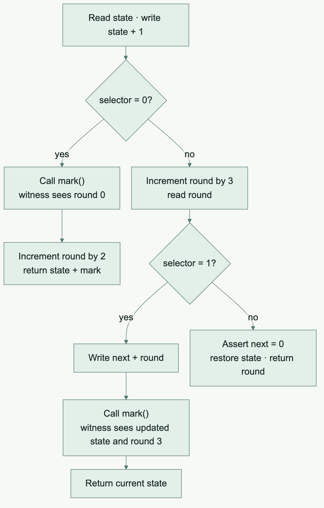

Compositional recording · 5 min read
Operations instead of shapes
The architectural ceiling that drove 0.4.0.
Before · Recognize the whole circuit
The early recorder worked like a set of templates. It inspected a circuit’s parameters, ledger actions and return value, then chose a recipe for a known pattern. The recipe could enforce the exact type and physical ledger slot. A different arrangement of familiar operations could still fail to find a recipe.

Two shapes the old recorder knew
The Set insert comes from the historical oracle fixture. The Field example illustrates the saved-read pattern. Both excerpts omit their ledger declarations.
| Shape | What the recognizer looked for |
|---|---|
| Insert into an opaque-string Set | One string parameter, exactly one insertion of that parameter into the declared Set slot, then a Unit result. A related membership shape expected no write and returned the membership Boolean. |
| Read an old Field value, update state and return the old value | A root binding that reads a declared Field cell once, actions inside that binding, then a return of the saved Field value. |
// Shape 1 · The value inserted comes directly from the parameter.
export circuit addName(name: Opaque<"string">): [] {
names.insert(disclose(name));
}
// Shape 2 · The result is the value from before the write.
export circuit replaceValue(next: Field): Field {
const before = state.read();
state.write(disclose(next));
return before;
}
Here, a shape was a recognizer’s predicate over the existing circuit representation. The relevant entities were the circuit, its declarations, and the recording recipe selected by the recognizer. There was no common Shape object with child shapes that the compiler could assemble into a larger program.
After · Build a plan from typed operations
The replacement describes a circuit as an ordered plan. A block is a list of bindings plus a result. Each binding pairs an operation with a typed value and an IR location. A read produces a value other operations can use. A write updates a declared slot. An if operation contains two blocks. The validator checks both branches, including their result types, while execution takes only the selected branch.

Illustrative plans using the integrated operation model
addName(name: OpaqueString)
_ : Unit = SetInsert(names, name)
return Unit
replaceValue(next: Field)
before : Field = CellRead(state)
_ : Unit = CellWrite(state, next)
return before
The integrated model gives Set insertion and membership their own typed operations, with the Set slot and element as inputs. In the Field example, the write and the return each refer to their own value, so returning the saved read stays explicit. A read, write or assertion now has the same place in the model inside a branch as it does at the top level. The validator can reject a value used before its definition or incompatible branch results at the operation that introduces the problem. In the integrated design, a shared semantic fold walks the admitted operations for native and recorded execution.
Walkthrough · What a witness sees depends on order
The prototype’s original orderedObservation circuit writes state, then takes one of three paths. The old recorder refused this circuit when recording was required. The pilot admitted the same source using the checked operation plan.
const before = state.read();
state.write(before + 1);
if (disclose(selector) == 0) {
const observed = mark();
assert(disclose(observed) == 77, "unexpected mark");
round.increment(2);
return disclose(state.read() + observed);
}
This excerpt is the first branch. The other live witness branch increments the round and writes the new state before calling mark(). A witness is a host-supplied function. Which ledger state it observes depends on the writes already performed in the selected branch.

| Prototype case | What the witness saw | Result |
|---|---|---|
| Selector 0, next = 9 | State 1 and round 0 | Returns 78. State stays 1 and round ends at 2. |
| Selector 1, next = 9 | State 12 and round 3 | Returns 12. State stays 12 and round stays 3. |
| Selector 2 with next = 0 | No witness call | Returns 3 and restores state to 0. |
The cases start from the fixture’s zero state and round. The tests compared native and recorded execution with an independent TypeScript reference, including witness order, ledger state and gas. This pilot established execution and replay behavior. Its proof obligation remained separate.
Why a versioned IR matters here
Every new node has consequences for traversal, validation, lowering, capabilities and diagnostics. Exhaustive handling makes those obligations visible. A version change can state that the boundary has changed instead of letting a consumer guess from generated text.
Source spans matter for the same reason. An unsupported child expression should point back to Compact source. A Rust panic or a generic target failure leaves users debugging the implementation rather than their program.
Retire a recognizer with evidence
A recognizer can be removed after the new composition covers its accepted family. That requires inclusion checks across the old family's behavior, diagnostics and resource refusals. Deleting a special case after proving one happy example would lose useful support.
The retirement programme therefore worked through bounded operation families and explicit refusal controls. A capability book and shared registry made admission easier to inspect.
Local prototype to integrated change
The October 14 storybook froze perf(test): shard historical laws in isolated processes while final effect qualification was still open. The later integrated commit feat(rust): replace recording shape admission with checked effects [skip ci] (#641) on October 16 records the checked-effect replacement through PR #641.
This is a good example of why a living book needs dated chapters. The old snapshot accurately described a prototype. The continuation records its later integration.
What was solved
Operations became reusable components of larger contract behavior. Native and recorded execution could share semantic ownership, and retirement acquired a measurable obligation.
What remained
A compositional foundation still needs specific source features, result conversions, public interfaces and proof gates. The following iterations show that work in concrete terms.